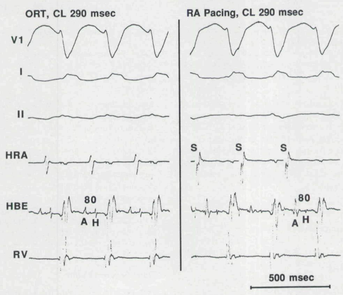
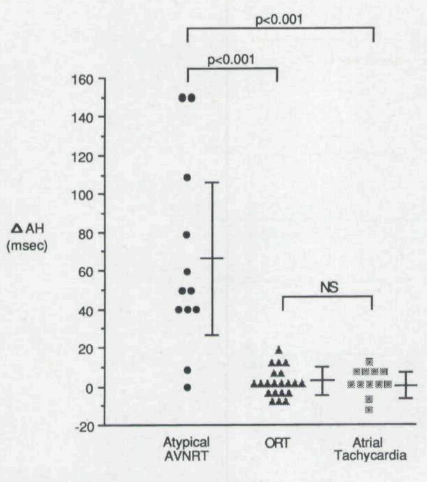

Clinical Case Conference
Division of Cardiology, University of Utah
2025-05-14
HPI: 59M with recurrent SVT, dx in 09/2023 peri-operatively (umbilical hernia repair), with subsequent MCT showing maximum duration of ~2 minutes. EPS in 02/2024 non-inducible.
Hx: DMT2 c/b neuropathy, ETOH/THC usage, lives alone in Ogden
Meds: duloxetine, gabapentin, metoprolol succinate 25, no allergies
Exam: 91 bpm, 118/76, 96% on RA. AOx4, thin gentleman, S1/S2 without M/G/R. Easy WOB with symmetrical chest rise. Antalgic gait (cane).
Studies: LVEF 65% with normal filling pressures. MCT with 4k runs of SVT, longest 2 minutes (symptomatic).
Long RP tachycardia can be challenging, particularly with posteroseptal accessory pathways and right atrial tachycardias.
Useful for differentiating between atypical AVNRT from ORT/AT
Limitations
Interpretation:
\(\Delta AH = | AH_{S1} - AH_{tach}|\) \(\Delta AH > 40 ms \Rightarrow atypical\ AVNRT\) \(\Delta AH < 20 ms \Rightarrow ORT \lor AT\)


Schematic showing difference for the AH interval for atypical AVNRT and atrial pacing by Man et al. 1995